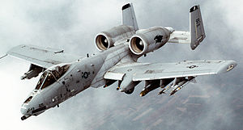

Hello World
Hello World
Hello My name is Travis and i like toast. Not any toast will do. My favorite
toast is
buttered toast.
My Favorite Quote
Never tell me the odds!- Han Solo
I'm Learning the LAMP stack.
- L: Linux
- A: Apache
- M: MySQL
- P: PHP
my top fve favorite foods
- bread
- bacon
- steak
- potatos
- apples
Questions I am often asked
- how tall are you?
- 6'3"
- where are you from?
- USA
My favorite websites
My Vehicle
I fly an A10 warthog. It is very good at avoiding traffic. It looks like this...

Decimal to Hexadecimal Conversion Chart
| Decimal |
Hexadecimal |
| 0 |
0 |
| 1 |
1 |
| 2 |
2 |
| 3 |
3 |
| 4 |
4 |
| 5 |
5 |
| 6 |
6 |
| 7 |
7 |
| 8 |
8 |
| 9 |
9 |
| 10 |
a |
| 11 |
b |
| 12 |
c |
| 13 |
d |
| 14 |
e |
| 15 |
f |
Back to top